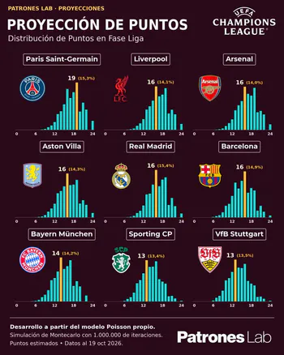

دوري أبطال أوروبا 2026/27 · النقاط المتوقعة
النقاط المتوقعة في نهاية مرحلة الدوري باستخدام بواسون ومونت كارلو، مع الوسيط ونطاقي المئينات 25–75 و5–95.
عرض المنشور ↗النقاط المتوقعة في نهاية مرحلة الدوري باستخدام بواسون ومونت كارلو، مع الوسيط ونطاقي المئينات 25–75 و5–95.
عرض المنشور ↗
تغير الترتيب النهائي المتوقع حتى الجولة الثالثة استنادًا إلى مليون محاكاة باستخدام بواسون ومونت كارلو.
عرض المنشور ↗
خريطة حرارية للترتيب النهائي المتوقع لفرق الدوري الإسباني استنادًا إلى مليون محاكاة مونت كارلو.
عرض المنشور ↗
محاكاة ببواسون ومونت كارلو لتقدير فرص احتلال أحد المراكز الثمانية الأولى وخوض الملحق والخروج من دوري أبطال أوروبا.
عرض المنشور ↗
مقارنة تصنيف إيلو والنقاط المتوقعة ونطاق نتائج المحاكاة لكل فريق.
عرض المنشور ↗
مدرجات تكرارية لنقاط المحاكاة تبيّن النتائج الأكثر شيوعًا في البطولة.
عرض المنشور ↗
مقارنة الترتيب النهائي باستخدام المئينات لتوضيح النطاق الأرجح للنتائج.
عرض المنشور ↗
عرض نموذج بواسون ومحاكاة مونت كارلو لتقدير النتائج والترتيب.
عرض المنشور ↗
منشور على LinkedIn عن المحاكاة. لم يُتحقق بعد من محتواه التفصيلي.
عرض المنشور ↗
تغير الترتيب المتوقع للمنتخبات من جولة إلى أخرى.
عرض المنشور ↗
نموذج أهداف باستخدام بواسون ومحاكاة مونت كارلو لتوقع نتائج دوري أبطال أوروبا.
عرض المشروع قيد التطوير ↗
مقارنة تصنيف إيلو لكل منتخب باحتمال فوزه بدوري الأمم الأوروبية.
عرض المنشور ↗
فرص التأهل في مختلف أدوار البطولة من المجموعات حتى النهائي.
عرض المنشور ↗
عرض نموذج المحاكاة المستخدم لتحليل احتمالات دوري الأمم الأوروبية.
عرض المنشور ↗
تحليل الحركة الجوية في جزر البليار باستخدام بيانات AENA العامة.
عرض المنشور ↗
محاكاة فرص تصدّر المجموعات وتجاوز الأدوار الإقصائية والفوز باللقب.
عرض المشروع ↗
تحديث احتمالات الترتيب النهائي بالنتائج الجديدة وتصنيفات إيلو.
عرض المنشور ↗
منشور عن محاكاة الدوري الإسباني 2026/27. التفاصيل بانتظار التحقق.
عرض المنشور ↗
محاكاة سيناريوهات لتقدير احتمالات المراكز والنتائج النهائية للدوري الإسباني.
عرض المشروع قيد التطوير ↗
منشور عن سيناريوهات الدوري الإسباني 2026/27. التفاصيل بانتظار التحقق.
عرض المنشور ↗
تطبيق DBSCAN لاكتشاف مجموعات المعاملات والعمليات غير المعتادة.
عرض المنشور ↗
دراسة رحلات سيارات الأجرة في شيكاغو لاستخلاص أنماطها الزمنية والجغرافية والاقتصادية.
عرض المنشور ↗
نموذج تصنيف يحلل المعاملات والإشارات المرتبطة بالاحتيال.
عرض المنشور ↗
التعريف بـ Patrones Lab ومشاريعه في تحليل البيانات والنمذجة والعرض البصري.
عرض المنشور ↗
نموذج يقارن تقنيات التصنيف لدراسة الخسائر الاقتصادية الناجمة عن الظواهر الجوية.
عرض المشروع قيد التطوير ↗
لوحة لتحليل الإنفاق على الموردين وتطوره وتوزيعه حسب الفئة والمنطقة.
عرض المشروع ↗
لوحة لقوائم Spotify لتحليل عدد مرات الاستماع وتغيره وتوزيعه حسب البلد.
عرض المشروع قيد التطوير ↗
تحديث فرص الفوز بكأس العالم والمواجهات المحتملة في النهائي.
عرض المنشور ↗
محاكاة مواجهات ربع النهائي وفرص التأهل في الأدوار الإقصائية لكأس العالم.
عرض المنشور ↗
تقدير فرص بلوغ نصف النهائي وخوض النهائي والفوز بكأس العالم.
عرض المنشور ↗
تحديث فرص التأهل والفوز باللقب بعد دور الـ32.
عرض المنشور ↗
تقدير فرص التأهل في كل دور بناءً على النتائج المتاحة حينها.
عرض المنشور ↗
نموذج محاكاة يقدّر فرص كل منتخب في التأهل والفوز باللقب.
عرض المشروع ↗
مقارنة اللاعبين الأرجنتينيين بالرتب المئينية لكل مركز ومؤشرات الأداء لكل 90 دقيقة.
عرض المنشور ↗
مقارنة بصرية لأداء لاعبي كأس العالم في قطر باستخدام مخططات الرتب المئينية.
عرض المشروع ↗
تحليل أثر التحركات بالكرة في الخطورة الهجومية أثناء نهائي الأرجنتين وفرنسا.
عرض المنشور ↗مقال عن كرة القدم والاحتمالات في مباراة الأرجنتين وفرنسا في قطر 2022.
قراءة المقال ↗
نموذج احتمالي يقدّر فرصة تسجيل هدف من كل تسديدة في كأس العالم في قطر.
عرض المشروع ↗تحليل الخطورة التي تولدها تحركات اللاعبين بالكرة في كأس العالم قطر 2022.
عرض المشروع ↗
لوحة تفاعلية لاستكشاف الطلب ومسارات رحلات سيارات الأجرة المسجلة في شيكاغو.
عرض المنشور ↗
خريطة تركز الرحلات في مناطق شيكاغو تستند إلى بيانات مفتوحة.
عرض المنشور ↗
تحليل مناطق الانطلاق والوصول ومسارات سيارات الأجرة ومناطق تركزها في شيكاغو.
عرض المنشور ↗خريطة المناطق الأكثر نشاطًا وتدفقات الرحلات المسجلة بين مناطق الانطلاق والوصول.
عرض المشروع ↗لوحة تفاعلية لاستكشاف حركة سيارات الأجرة في شيكاغو وأجورها ومساراتها.
عرض المشروع ↗تحليل اختلاف الرحلات المُبلّغ عنها حسب اليوم والوقت والمسافة والأجرة.
عرض المنشور ↗مقال يستكشف شبكة رحلات سيارات الأجرة في شيكاغو باستخدام بيانات مفتوحة.
قراءة المقال ↗تحليل الطلب والمسارات والأجور لرحلات سيارات الأجرة المسجلة في شيكاغو.
عرض المشروع ↗
تحليل الأسعار بحسب الموقع والمسافة من مركز المدينة وخصائص الأحياء.
عرض المشروع ↗
نموذج يميّز بين المساكن المرتفعة والمنخفضة السعر نسبيًا ضمن كل نوع من الغرف.
عرض المشروع ↗
مقارنة الأسعار والتوزيع الجغرافي لمساكن Airbnb في لندن.
عرض المنشور ↗مقال عن أسعار مساكن Airbnb في لندن وتوزيعها الجغرافي.
قراءة المقال ↗استكشاف الأسعار وأنواع المساكن وتوافرها والفروق بين أحياء لندن.
عرض المشروع ↗تحليل أعداد الركاب والربط الجوي والتغيرات الموسمية في مطارات جزر البليار.
عرض المنشور ↗مقال عن السياحة في جزر البليار يستند إلى بيانات AENA المفتوحة.
قراءة المقال ↗تحليل الحركة الجوية في مايوركا وإيبيزا ومينوركا باستخدام بيانات AENA العامة.
عرض المشروع ↗تجميع المعاملات حسب الكثافة للكشف عن العمليات غير المعتادة وأنماط الاحتيال المحتملة.
عرض المشروع ↗تصنيف المعاملات بطريقة خاضعة للإشراف لتقدير خطر الاحتيال وتفسير المؤشرات المرتبطة به.
عرض المشروع ↗
تقسيم المعاملات باستخدام K-means لدراسة السلوك غير المعتاد المرتبط بالاحتيال.
عرض المشروع ↗